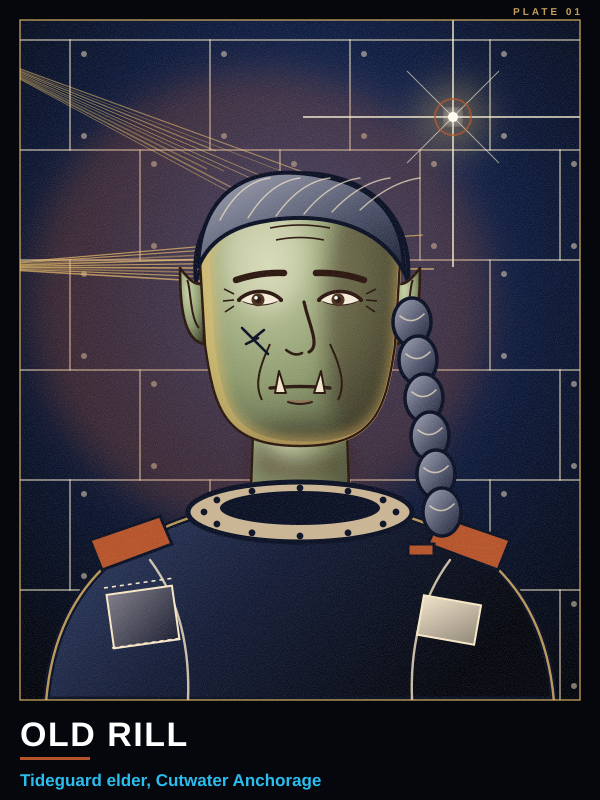
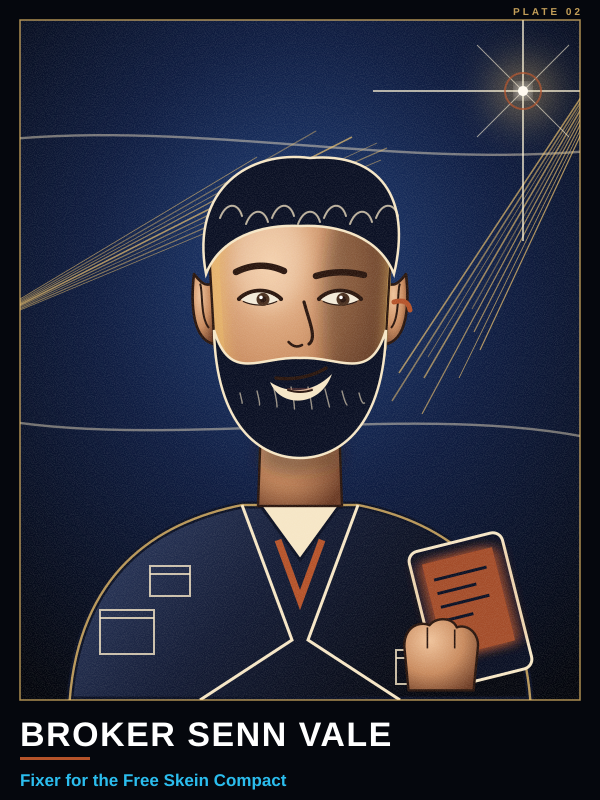
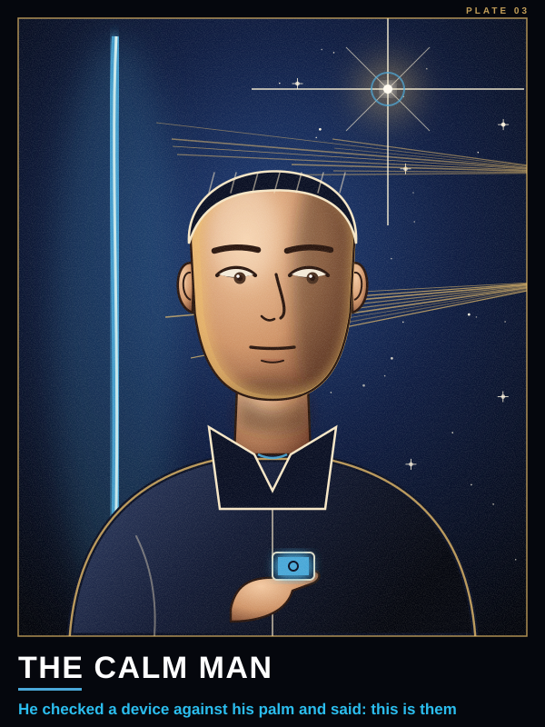
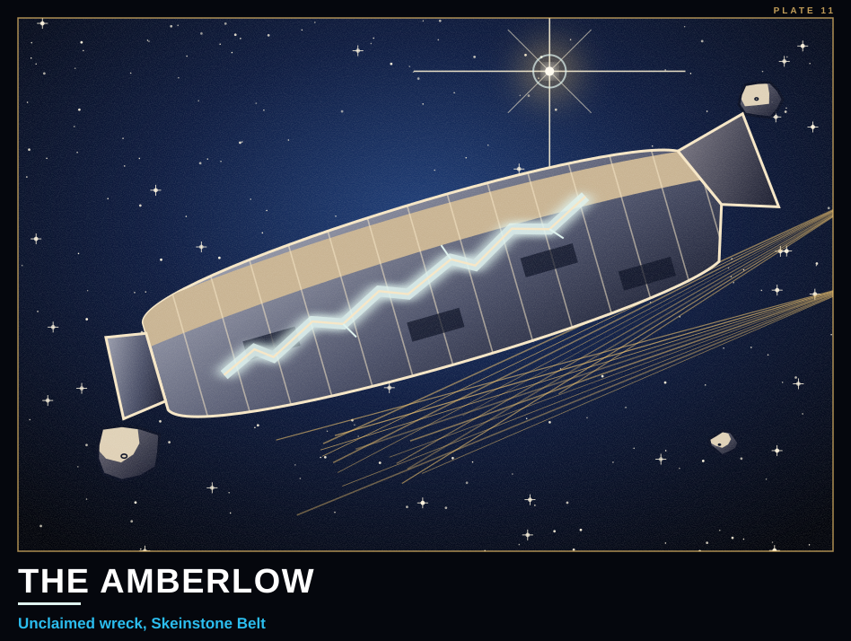
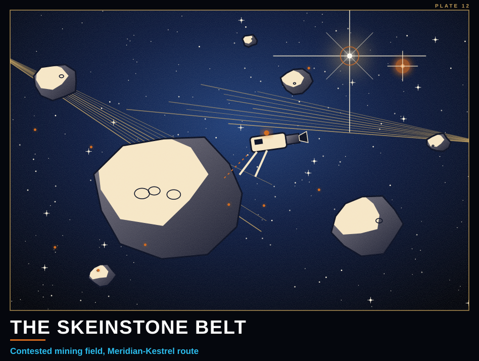
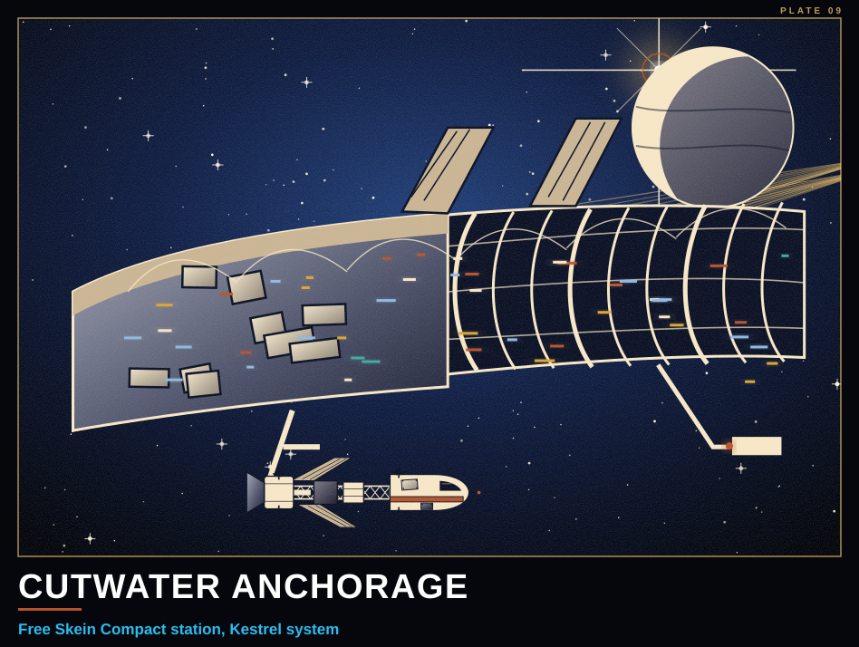
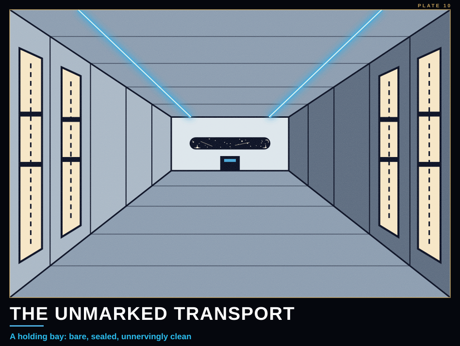

Crew Gallery
Ferrylight archive
People you have met

Old RillTideguard elder, Cutwater Anchorage
Broker Senn ValeFixer for the Free Skein Compact
The calm manHe checked a device against his palm and said: this is themPlaces

The AmberlowUnclaimed wreck, Skeinstone Belt
The Skeinstone BeltContested mining field, Meridian-Kestrel route
Cutwater AnchorageFree Skein Compact station, Kestrel system
The unmarked transportA holding bay: bare, sealed, unnervingly clean The Compact runaboutThe loaner. Functional, unglamorous, much repaired
The Compact runaboutThe loaner. Functional, unglamorous, much repaired